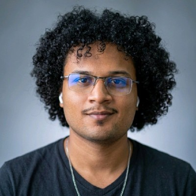

Backend & APIs
Desenvolvimento de APIs robustas, arquitetura de microsserviços, design de bancos de dados e sistemas distribuídos de alta performance.
Explorar Backend →Sou um engenheiro de software em formação com ênfase em Backend, Inteligência Artificial e Sistemas Escaláveis. Meu trabalho envolve construir soluções robustas e eficientes, desde APIs e arquiteturas de sistemas até modelos de IA aplicados a problemas reais.

Um portfólio desenvolvido nas minhas áreas de interesse e especialização.
Desenvolvimento de APIs robustas, arquitetura de microsserviços, design de bancos de dados e sistemas distribuídos de alta performance.
Explorar Backend →Modelos de Machine Learning, processamento de linguagem natural, visão computacional e sistemas multiagentes inteligentes.
Explorar IA →Arquiteturas cloud-native, pipelines de dados, automação de infraestrutura e soluções de alta disponibilidade.
Explorar Sistemas →Full-stack development, boas práticas de código, CI/CD, testes automatizados e entrega contínua de software.
Explorar Projetos →